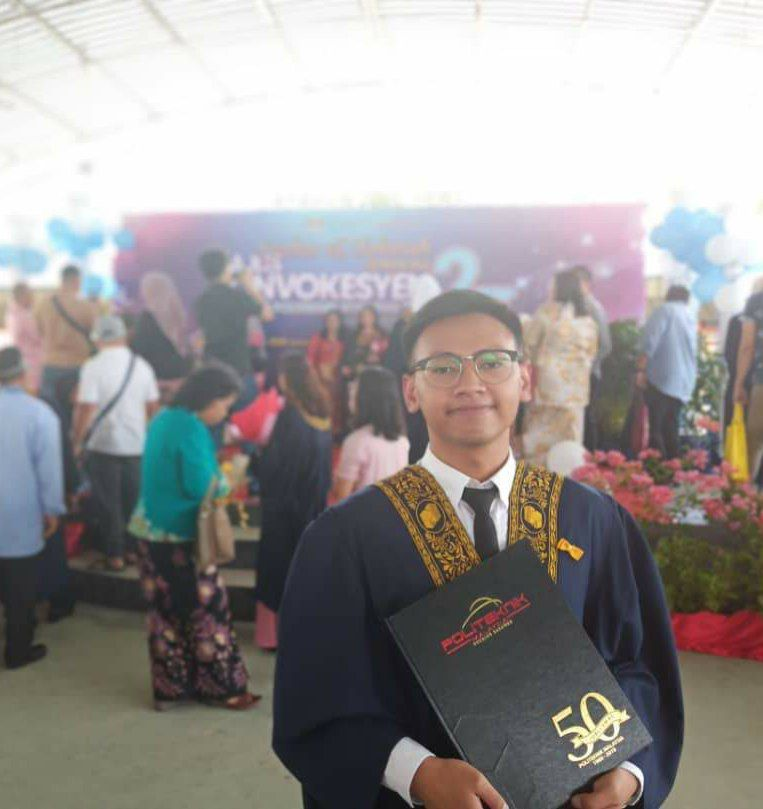

ABOUT US
| TITLE | Rahoma Darul Fakir |
|---|---|
| NAME | Muhammad Khairul Adli bin Ahmadie |
| Viviana Awing Epoi | |
| Tasha ak Peter | |
| STUDENT ID | 2020968255 |
| 2020960201 | |
| 2020968377 | |
| GROUP | BA232 2D |
| COURSE CODE | IMS 456 |
| COURSE NAME | Basic Web Design And Content Management |
| PROGRAM CODE | BA232 |
| FACULTY | Faculty of Business and Management |
| SUBMISSION DATE | 20 January 2021 |
| PUBLISHED URL | https://github.com/VivianaAwing97/My-Resume.git |

Khairul Adli

Viviana Awing
Tasha Peter